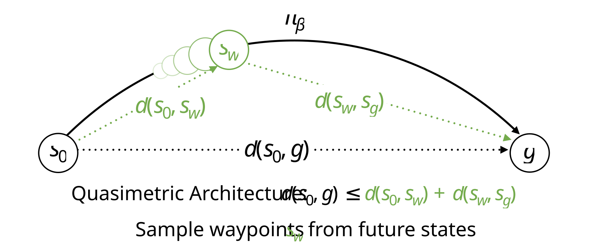
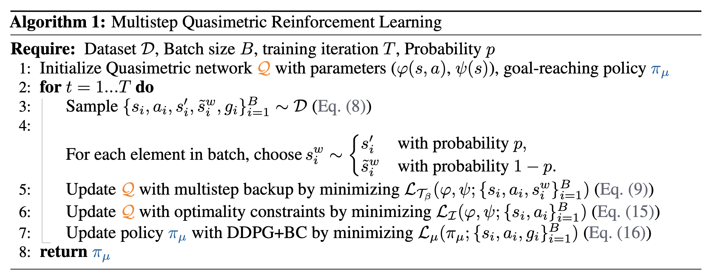
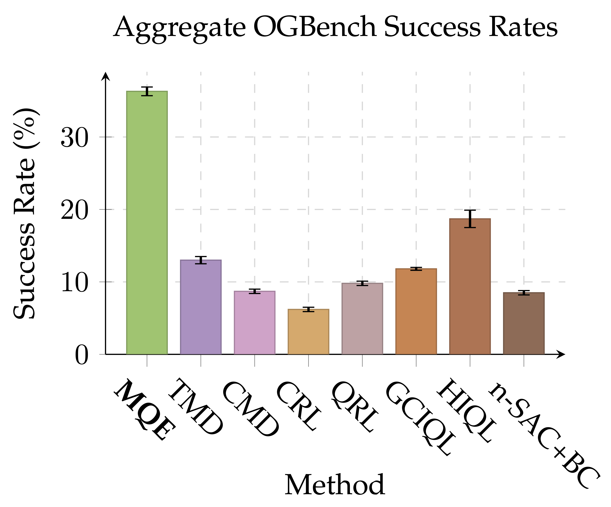
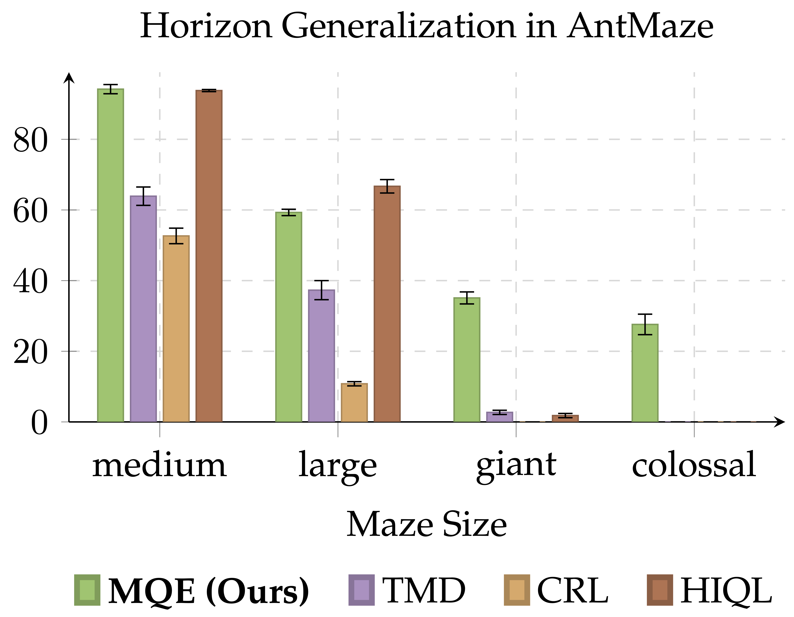
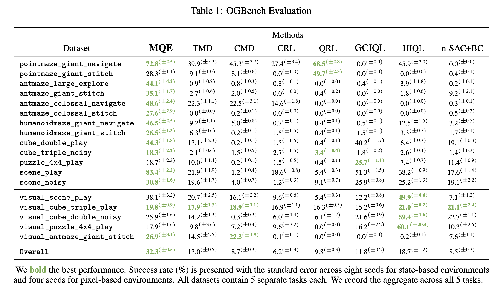

Abstract
Learning how to reach goals in an environment is a longstanding challenge in AI, yet reasoning over long horizons remains a challenge for modern methods. The key question is how to estimate the temporal distance between pairs of observations. While temporal difference methods leverage local updates to provide optimality guarantees, they often perform worse than Monte Carlo methods that perform global updates (e.g., with multi-step returns), which lack such guarantees. We show how these approaches can be integrated into a practical GCRL method that fits a quasimetric distance using a multistep Monte-Carlo return. We show our method outperforms existing GCRL methods on long-horizon simulated tasks with up to 4000 steps, even with visual observations. We also demonstrate that our method can enable stitching in the real- world robotic manipulation domain (Bridge setup). Our approach is the first end-to-end GCRL method that enables multistep stitching in this real-world manipulation domain from an unlabeled offline dataset of visual observations.
Motivation

In goal-conditioned off-policy RL, it is a highly nontrivial task to perform task-stitching: imagine you have seen two separate tasks in a training dataset, and you want to combine them together in evaluation. How should we do that? Recently, quasimetric architecture for value learning has demonstrated emerging capabilities to stitch these tasks together, which we can call horizon generalization. Our work, Multistep Quasimetric Estimation (MQE), introduces a new approach in learning quasimetric distances, and addresses the following challenges:
- How can we scale up the horizon generalization capabilities of value learning using quasimetric distance representations?
- How can we provide a good quasimetric method for real-world robotic manipulation tasks?
Method
The main idea of MQE is that to incorporate multistep backup under a quasimetric architecture. While previous works have used either purely Monte-Carlo methods or one-step TD update methods, we realized that it is better to use multistep backups directly to learn the values!
Building Blocks: Quasimetric Distance Representations
Instead of using a neural network or dot product to derive the distance learned, we use
The quasimetric network is parameterized by two encoders: a state-action encoder $\varphi(s, a)$ and a state encoder $\psi(s)$. We can then equivalently define the Q function and value function of some embeddings $x$ and $y$ as:
$d_{\text{mrn}}(x,y) \triangleq \frac{1}{N}\sum_{k=1}^{N} \max_{m=1 \ldots M} \max(0,x_{kM+m} - y_{kM+m}) + \| x_{kM+m} - y_{kM+m}\|_2$
This is desirable because the distance formulation follows the three important properties of a quasimetric function: identity, non-negativity, and the triangle inequality. The MRN formulation also allows the learned distance to not be necessarily symmetric, which relaxes the distance from a metric to a quasimetric. We can now define the Q function and value function as:
$Q_g(s, a) = V_g(g) e^{-d_{\text{MRN}}(\varphi(s, a), \psi(g))},\quad V_g(s) = V_g(g) e^{-d_{\text{MRN}}(\psi(s), \psi(g))}$
In short, MQE can be described as this process:
- Sample a goal $g$ and waypoint $s_w$ from the dataset and the number of steps between the current state $s$ and the waypoint $s_w$.
- Learn the Q function via multistep backup: $e^{-d(\varphi(s, a), \psi(g))} \xleftarrow{} \mathbb{E}_{\{(s_t, a_t), s_t^w\} \sim \mathcal{D}}[\gamma^{k'} \cdot e^{-d(\psi(s_t^w), \psi(g))}].$
- Learn the value function by minimizing the distance between the embeddings: $d(\psi(s), \varphi(s, a)) \xleftarrow{} 0$.
Show pseudocode

Experiments
Tasks

We use the OGBench setup for our simulated experiments, and we use the Bridge setup for our real-world evaluation.
We have designed a colossal maze that tests the horizon generalization capabilities of the policy to its limits, and in the real world, BridgeData has desirable properties where none of the tasks are compositional in nature.
OGBench Evaluation
- MQE achieves the strongest performance against a variety of offline RL methods on OGBench (90 tasks in total) across both state and pixel-based observations.
- In particular, MQE outperforms both comparable quasimetric value learning methods (QRL, CMD, TMD) as well as horizon-reduction methods (n-SAC+BC, HIQL) without requiring any hierarchical components!

- We take a special look with stitch datasets to see how well our method can handle long-horizon tasks. The key insight is that stitch datasets only have trajectories that are 4 meters long. Therefore, a policy that can perform well in these settings must be able to perform policy stitching as well as horizon generalization.
- While policy horizon reduction methods have worked well, we see that MQE actually generalizes over a much longer horizon better than any existing method!

Show Complete Results Table

OGBench Rollouts
scene-play
humanoidmaze-giant-stitchAblations
Can we get a better distance representation compared to other RL methods?
Let's take a look at what are the distances that we actually learn from these methods. We use antmaze-large-explore to find the learned distances $d(s, g)$. As the trajectories inside the dataset is highly noisy, we can use this to empirically compare how well our value functions are being distilled.

From these figures, we see that MQE has the best structure out of all of the distance representations.
${\bf B\kern-.05em{\small I\kern-.025em B}\kern-.08em T\kern-.1667em\lower.7ex\hbox{E}\kern-.125emX}$
@misc{zheng2025multistepquasimetriclearningscalable,
title = "Multistep Quasimetric Learning for Scalable Goal-conditioned Reinforcement Learning",
author = "Bill Chunyuan Zheng and Vivek Myers and Benjamin Eysenbach and Sergey Levine",
year = "2025",
eprint = "2511.07730",
archivePrefix = "arXiv",
primaryClass = "cs.LG",
url = "https://arxiv.org/abs/2511.07730",
}